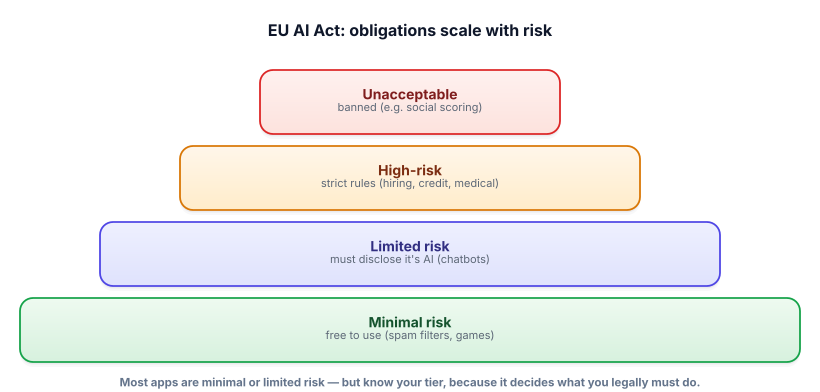

Governance & regulation
“Be responsible” is becoming “comply with the law.” You don’t need to be a lawyer, but you do need to understand how AI regulation is structured, because it shapes what you’re allowed to build and what you must document. This is the literacy interviewers increasingly expect.
This lesson explains concepts so you can talk about them and design sensibly. Laws vary by region, are actively evolving, and the specifics change — for real compliance decisions, check the current regulations and consult legal counsel. Treat this as engineering literacy, not a compliance manual.
The organizing idea: risk-based rules
The most influential framework, the EU AI Act, is worth knowing because its core idea is spreading: obligations scale with risk. Rather than one rule for all AI, it sorts uses into tiers and imposes heavier requirements as the potential for harm rises. An AI that recommends songs is treated very differently from one that screens job applicants — and rightly so.

The tiers, and what they mean for you
Unacceptable risk → banned. A small set of uses considered too harmful are prohibited outright (e.g. government social scoring, certain manipulative systems). If your idea is here, it’s not a compliance task — it’s off the table.
High risk → strict obligations. Uses in sensitive domains — hiring, credit, education, healthcare, critical infrastructure, law enforcement — are allowed but carry heavy requirements: risk management, data governance, documentation, human oversight, transparency, accuracy and robustness testing, and record-keeping. This is where most of the engineering-compliance work lives, and where “we tested it and documented it” stops being optional.
Limited risk → transparency. Things like chatbots must disclose that users are interacting with AI, and AI-generated content may need labeling. Light obligations, mostly about honesty.
Minimal risk → free. The vast majority — spam filters, recommendations, game AI — have essentially no special obligations.
The practical takeaway: know your use case’s tier early, because it determines what you must build. A hiring tool (high-risk) needs documented testing, bias evaluation, human oversight, and audit trails by design; bolting them on later is painful. Beyond the AI Act, remember adjacent rules: data-privacy law (like GDPR) governs the personal data you feed models and store; there are open questions around copyright and training data; and sector rules (finance, health) add their own requirements.
- Modern AI regulation is risk-based: obligations scale with potential harm (the EU AI Act’s core idea).
- Tiers: unacceptable (banned) → high-risk (strict rules) → limited (disclose it’s AI) → minimal (free).
- High-risk (hiring, credit, medical, etc.) demands documentation, human oversight, bias testing, and record-keeping by design.
- Know your tier early — it dictates what you must build; retrofitting compliance is costly.
- Also mind data-privacy law (GDPR), copyright, and sector rules. (And verify current specifics — this evolves.)
For each, name the likely EU-AI-Act risk tier and one obligation it implies: (a) a chatbot that answers FAQs on a retail site; (b) an AI that scores loan applications; (c) a spam filter.
▸ Show solution & reasoning
(a) FAQ chatbot → limited risk. Obligation: transparency — disclose to users that they’re talking to an AI, not a human. Otherwise light-touch.
(b) Loan-scoring AI → high risk. Credit decisions materially affect people’s lives, so this tier brings the heavy obligations: documented risk management, data governance, bias/accuracy testing, human oversight (a person can review/override), transparency to affected people, and record-keeping. You’d design audit trails and disaggregated evaluation (Lesson 13.3) from day one.
(c) Spam filter → minimal risk. Essentially no special obligations — it’s a low-stakes classifier.
Why this matters: the same technology (an LLM classifier) lands in three different tiers purely because of what decision it affects. That’s the whole logic of risk-based regulation, and it’s why the first question for any new AI feature isn’t “can we build it?” but “what does it affect, and therefore what must it satisfy?” Knowing to ask that — and that the loan model needs oversight and documentation the spam filter doesn’t — is the literacy that keeps a team out of trouble and marks you as someone who thinks past the demo.
Under a risk-based framework like the EU AI Act, what determines how many obligations an AI system carries?
Here’s the reassuring part, and a genuinely strong interview point: much of what high-risk compliance requires is the good engineering this course already taught — just written down and made auditable. “Accuracy and robustness testing” is your evaluation suite (Track 6). “Risk management and known limitations” is the failure-mode thinking and the model card (Lesson 13.3). “Human oversight” is the human-in-the-loop design you use for high-stakes actions (Tracks 7, 15).
“Record-keeping” is the tracing and logging from your production monitoring (Track 12). “Data governance” is the pipeline and data-quality discipline you’ve done for a decade. Compliance isn’t a separate, alien workstream so much as the artifacts of responsible engineering, organized so an auditor (or a regulator) can inspect them.
That reframing is powerful in two ways. First, it means the right time to build for governance is upfront, because the eval sets, audit logs, documentation, and oversight steps are cheap to design in and expensive to retrofit — the same lesson as security and evals throughout the course.
Second, it positions you well: a data engineer who can talk about audit trails, data governance, testing, and documentation is already fluent in the language of AI governance, because those are your existing strengths applied to a new domain. When an interviewer raises regulation, the answer that impresses isn’t reciting statutes — it’s “I’d identify the risk tier, and for high-risk uses I’d build in evaluation, human oversight, logging, and documentation from the start, because that’s both the responsible design and what compliance will require.” That connects ethics, engineering, and law in one sentence, which is exactly the maturity these questions are probing for.
You now understand where the field is going and how to build in it responsibly. Let’s consolidate it the way an interviewer will. Next: the interview check — and the finish line of the course.